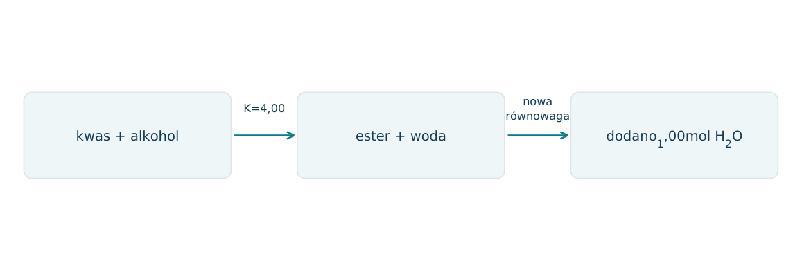
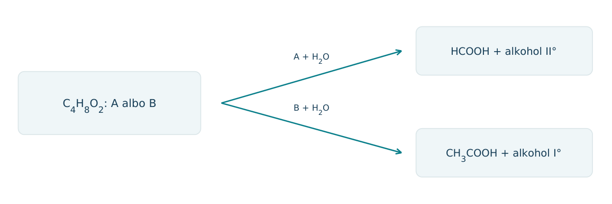
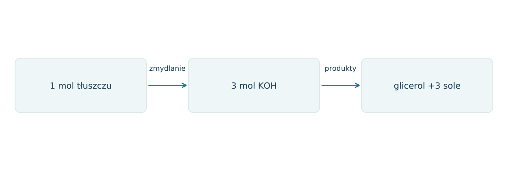
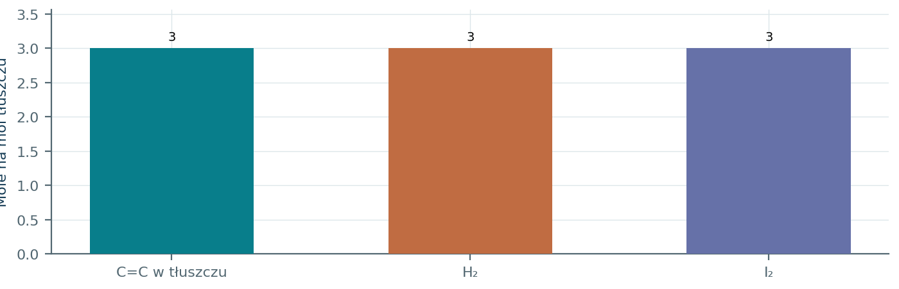
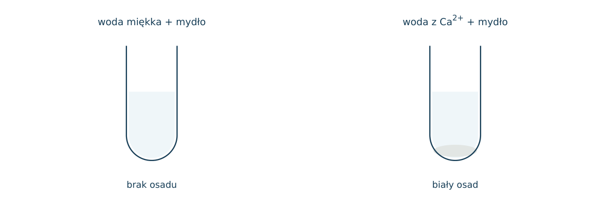
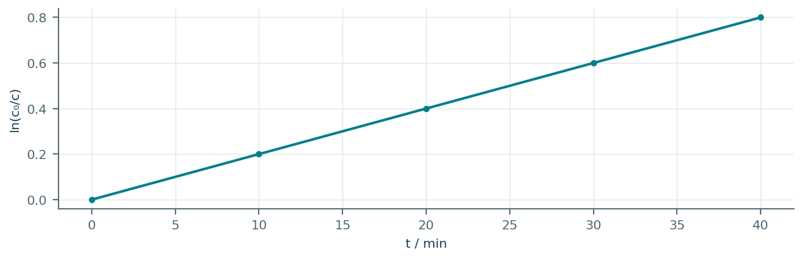
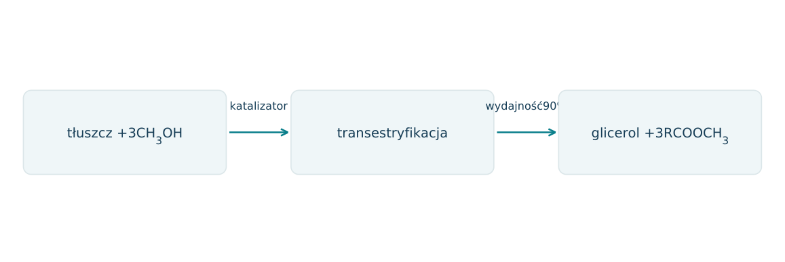
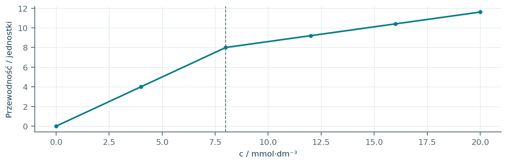

20.01 · 1 pkt
Nazwij CH3COOCH3, HCOOCH2CH3 i CH3CH2COOCH3.
Rozwiązanie
- Etanian metylu; metanian etylu; propanian metylu. Dopuszczalne poprawne nazwy zwyczajowe.
50 zadań · 112 pkt · odpowiedzi rozwijane po samodzielnej próbie
← KatalogZadania PDFRozwiązania PDFDane do obliczeń: H 1; C 12; N 14; O 16; Na 23; Mg 24; Al 27; P 31; S 32; Cl 35,5; K 39; Ca 40; Cr 52; Mn 55; Fe 56; Cu 64; Zn 65; Ag 108; Br 80; I 127; Ba 137 (g/mol). NA = 6,02·1023 mol-1. Vm = 22,4 dm3/mol w warunkach normalnych (0°C, 1013 hPa). W 25°C Kw = 10-14. Dane podane w zadaniu mają pierwszeństwo.
Nazwij CH3COOCH3, HCOOCH2CH3 i CH3CH2COOCH3.
Oceń zdania A i B, wpisując P albo F. Każde zdanie fałszywe popraw lub krótko uzasadnij. A: Zmydlanie triacyloglicerolu zużywa trzy mole NaOH na mol tłuszczu. B: Uwodornienie C=C tłuszczu jest tym samym procesem co hydroliza wiązań estrowych.
Wskaż część pochodzącą od kwasu i od alkoholu w CH3CH2COOCH3.
Czym różni się estryfikacja od hydrolizy estru?
Jaką rolę pełni H2SO4 w typowej estryfikacji i jak usuwanie wody wpływa na równowagę?
Dlaczego zasadowa hydroliza estru jest w szkolnym ujęciu praktycznie nieodwracalna?
Napisz równanie kwasu octowego z etanolem w H+. Nazwij produkty lub grupę substancji.
Napisz równanie kwasu mrówkowego z metanolem w H+. Nazwij produkty lub grupę substancji.
Napisz równanie hydrolizy kwasowej propanianu metylu. Nazwij produkty lub grupę substancji.
Napisz równanie hydrolizy zasadowej etanianu etylu. Nazwij produkty lub grupę substancji.
Napisz równanie hydrolizy zasadowej benzoesanu metylu. Nazwij produkty lub grupę substancji.
Napisz równanie otrzymania tristearynianu glicerolu; zapisz glicerol jako C3H5(OH)3. Nazwij produkty lub grupę substancji.
Napisz równanie zmydlania tristearynianu glicerolu NaOH. Nazwij produkty lub grupę substancji.
Napisz równanie strącania mydła wapniowego z RCOONa i CaCl2. Nazwij produkty lub grupę substancji.
Czy tłuszcze są polimerami? Wyjaśnij na podstawie budowy typowego triacyloglicerolu.
Dlaczego oleje z większą liczbą wiązań cis C=C mają zwykle niższą temperaturę topnienia niż analogiczne tłuszcze nasycone?
Na czym polega utwardzanie tłuszczu przez uwodornienie?
Który fragment jonu C17H35COO- jest hydrofilowy, a który hydrofobowy?
Jak są ustawione jony mydła w miceli w wodzie?
Dlaczego twarda woda zmniejsza skuteczność mydła?
Jak sprawdzić, czy tłuszcz jest nienasycony? Podaj odczynnik, wynik i ograniczenie próby.
Ile gramów NaOH potrzeba do pełnej hydrolizy 0,10 mola estru monokarboksylowego?
Ile moli NaOH potrzeba do zmydlenia 0,050 mola triacyloglicerolu i ile moli glicerolu powstanie?
6,0 g CH3COOH poddano estryfikacji nadmiarem etanolu. Oblicz masę estru przy wydajności 75%, M estru=88 g/mol.
Z hydrolizy 8,8 g etanianu etylu otrzymano etanol ilościowo. Oblicz masę etanolu.
Triacyloglicerol ma M=890 g/mol. Ile gramów NaOH potrzeba do zmydlenia 89,0 g?
Trioleinian glicerolu ma trzy C=C na cząsteczkę. Oblicz ilość H2 potrzebną do uwodornienia 0,20 mola tłuszczu.
Ester o wzorze C3H6O2 po hydrolizie daje metanol. Ustal ester i drugi produkt.
Ester C3H6O2 po hydrolizie daje etanol. Ustal wzór i nazwę estru.
Napisz dwa różne estry o wzorze C4H8O2 i podaj pary substratów ich estryfikacji.
W równowadze CH3COOH+C2H5OH⇌CH3COOC2H5+H2O dodano dużo etanolu. Co dzieje się z wydajnością i wartością K przy stałej T?
Informacja: biodiesel to mieszanina metylowych estrów kwasów tłuszczowych. Zapisz transestryfikację triacyloglicerolu R z CH3OH.
Po dodaniu HCl do wodnego roztworu mydła powstała słabo rozpuszczalna substancja. Podaj równanie jonowe i nazwę typu produktu.
Zapisz estryfikację H3PO4 trzema cząsteczkami etanolu do estru obojętnego. Wskaż, że to ester kwasu nieorganicznego.
Mieszanina 1,0 mola kwasu i 1,0 mola alkoholu dała w równowadze 0,60 mola estru i tyle samo wody. Oblicz Kc, przyjmując jedną fazę i stałą objętość.
Aspiryna zawiera COOH i fenolową grupę OH zablokowaną jako ester etanianowy. Jakie dwie reakcje z OH- mogą zachodzić przy nadmiarze zasady?
Informacja: detergent anionowy ma hydrofilową grupę SO3- i długi łańcuch R. Wyjaśnij wspólną zasadę mycia detergentem i mydłem.
Próbka 8,8 g czystego estru monofunkcyjnego zużyła 0,10 mola NaOH. Oblicz M i podaj jeden pasujący ester nasycony acykliczny.
Czy wzrost stopnia nasycenia tłuszczu w reakcji z H2 oznacza hydrolizę jego wiązań estrowych? Wyjaśnij.
Ester X ma M=88 g/mol. 8,8 g X po hydrolizie zasadowej daje 4,6 g etanolu i jedną sól. a) Oblicz n(X) i n alkoholu. b) Ustal wzór X. c) Napisz równanie z NaOH. d) Opisz odzyskanie kwasu z soli oraz zapisz równanie jonowe.
Każdy numer 41-50 oznacza jedno zadanie główne; podpunkty są oceniane osobno.
Do estryfikacji wprowadzono 1,00 mola CH3COOH i 1,00 mola C2H5OH, bez początkowego estru ani wody. W danej T K=4,00, zapisane jako stosunek iloczynów stężeń. Schemat przedstawia stan przed i po dodaniu wody do równowagi; wszystkie składniki pozostają w jednej fazie.

20.41.1 (2 pkt) Wyznacz liczbę moli estru w pierwszej równowadze.
20.41.2 (2 pkt) Ułóż równanie dla nowej końcowej liczby moli estru y po dodaniu wody i wyznacz y.
20.41.3 (1 pkt) Dlaczego dodanie katalizatora kwasowego nie zastąpi usuwania wody?
K=x²/(1-x)²=4; x=2/3 mola.
Pozostałe: kwas i alkohol 1-y, woda 1+y. y(1+y)/(1-y)²=4;3y²-9y+4=0; y=(9-sqrt 33)/6≈0,543 mol.
Katalizator nie przesuwa równowagi; usunięcie produktu zmienia iloraz reakcji i zwiększa równowagowy udział estru.
A i B mają wzór C4H8O2. A po hydrolizie daje kwas metanowy i alkohol drugorzędowy. B daje kwas etanowy i alkohol pierwszorzędowy. Produkty ilustruje schemat; nie zakładaj takiego samego podziału atomów C w obu estrach.

20.42.1 (2 pkt) Zapisz wzory półstrukturalne A i B.
20.42.2 (1 pkt) Zapisz zasadową hydrolizę A.
20.42.3 (1 pkt) Ile moli NaOH zużyje 0,0500 mola każdego estru i dlaczego?
A HCOOCH(CH3)2; B CH3COOCH2CH3.
HCOOCH(CH3)2+NaOH→HCOONa+CH3CH(OH)CH3.
Po 0,0500 mola; każdy zawiera jedno wiązanie estrowe ulegające zmydlaniu.
Liczba zmydlania oznacza mg KOH zużyte na 1 g tłuszczu. Dla czystego triacyloglicerolu wynosi ona 168 mg/g. W modelu tłuszcz zawiera wyłącznie trzy jednakowe reszty nasyconego kwasu; M(KOH)=56,0, M(glicerolu)=92,0, M(H2O)=18,0.

20.43.1 (2 pkt) Wyznacz M tłuszczu i kwasu tłuszczowego.
20.43.2 (1 pkt) Oceń, czy wynik pozwala wskazać idealny pojedynczy nasycony kwas CnH2nO2 przy dokładnych podanych danych.
20.43.3 (1 pkt) Wyjaśnij, jak wolne kwasy w próbce wpływają na interpretację liczby zmydlania.
1 mol zużywa 168gKOH; M=168/0,168=1000 g/mol. Mkwasu=(1000-92+54)/3≈320,7 g/mol.
Nie: (320,7-32)/14≈20,62 nie jest liczbą całkowitą; założenie czystego jednorodnego tłuszczu lub dokładność danych wymaga weryfikacji.
KOH jest zużywany też na ich zobojętnianie; nie można przypisać całego zużycia jedynie trzem wiązaniom estrowym na cząsteczkę tłuszczu.
1,00 mola modelowego triacyloglicerolu o M=884 g/mol zużywa 3,00 mola H2. Podano M(I 2)=254. Załóż, że każde C=C przyłącza 1 mol I 2 lub H2, a grupy estrowe pozostają niezmienione. Liczba jodowa to g I 2 na 100 g próbki.

20.44.1 (2 pkt) Oblicz liczbę jodową.
20.44.2 (1 pkt) Oblicz M produktu pełnego uwodornienia.
20.44.3 (1 pkt) Czy trzy C=C oznaczają, że każda reszta kwasowa ma dokładnie jedno?
3·254/884·100≈86,2 g I 2/100 g.
884+3·2=890 g/mol.
Nie; pomiar określa sumę. Mogą to być np. układy 1+1+1 albo 2+1+0, jeśli inne dane tego nie wykluczają.
Do 100 cm3 roztworu zawierającego Ca2+ o c0,0100 mol/dm3 dodano 0,00300 mola stearynianu sodu. Przyjmij ilościowe strącanie Ca(C17H35COO)2 i M osadu 606 g/mol. Rysunek pokazuje powstawanie osadu zamiast trwałej piany.

20.45.1 (2 pkt) Zapisz równanie jonowe i oblicz masę osadu.
20.45.2 (1 pkt) Ile moli anionu mydła pozostanie po strąceniu?
20.45.3 (1 pkt) Dlaczego detergent o solach Ca znacznie lepiej rozpuszczalnych może zachować skuteczność?
Ca2++2C17H35COO-→Ca(C17H35COO)2; nCa=0,00100 mol; mosadu 0,606 g.
0,00300-2·0,00100=0,00100 mola.
Mniej anionów usuwa się z roztworu jako osad, więc pozostają dostępne do tworzenia agregatów i emulgowania tłuszczu.
Aspiryna ma w tej cząsteczce jedną COOH i jedną grupę estrową (acetylowana fenolowa OH). Przyjmij: 1 mol NaOH zobojętnia COOH, drugi zmydla ester; fenolowej OH powstałej po hydrolizie w przyjętym oznaczeniu nie miareczkuje się. M aspiryny 180.
20.46.1 (2 pkt) Oblicz minimalne zużycie NaOH na oba procesy dla 0,900 g czystej aspiryny.
20.46.2 (1 pkt) Zapisz organiczne produkty po kwasowej hydrolizie i końcowym zakwaszeniu.
20.46.3 (1 pkt) Dlaczego bez zdefiniowania punktu końcowego i warunków nie wolno automatycznie liczyć tylko jednej grupy kwasowej?
nasp=0,00500 mol; nNaOH=0,0100 mola.
Kwas salicylowy C6H4(OH)COOH i kwas etanowy CH3COOH.
Zasada zużywa się również w hydrolizie estru; w innych warunkach może także jonizować fenol. Stechiometria zależy od procedury.
W dużym nadmiarze alkoholu ubytek modelowego kwasu opisano c=c0 exp(-kt). Wykres przedstawia ln(c0/c) w czasie; odwracalność można pominąć w tym zakresie. Stężenia pochodzą z oznaczeń pobranych próbek.

20.47.1 (2 pkt) Wyznacz k i czas zmniejszenia c do połowy, ln2=0,693.
20.47.2 (1 pkt) Oblicz ułamek kwasu pozostały po 50 min.
20.47.3 (1 pkt) Dlaczego tego równania nie należy bez sprawdzenia ekstrapolować do całkowitego zaniku kwasu w zwykłej zamkniętej estryfikacji?
k=0,0200 min-1; t1/2=0,693/0,0200=34,7 min.
c/c0=exp(-1)=0,368.
Reakcja jest odwracalna i narasta ilość produktów; założenie pomijalnej reakcji wstecznej może przestać obowiązywać.
Podano: triacyloglicerol+3CH3OH⇌glicerol+3 estry metylowe kwasów tłuszczowych. To wymiana części alkoholowej estru. Modelowy tłuszcz ma M=890 g/mol i jednakowe reszty kwasu o M=284; proces daje 90% teoretycznej ilości estrów metylowych.

20.48.1 (2 pkt) Oblicz M estru metylowego i jego masę z 89,0 g tłuszczu.
20.48.2 (1 pkt) Ile moli glicerolu odpowiada tej rzeczywistej przemianie, jeśli nie ma reakcji ubocznych?
20.48.3 (1 pkt) Porównaj transestryfikację ze zmydlaniem pod względem produktów kwasowej części tłuszczu.
Mestru=284+32-18=298; nteor 0,300 mol, nrzecz 0,270; m=80,46 g.
0,0900 mola.
Transestryfikacja daje inne estry, zmydlanie zasadowe daje sole kwasów karboksylowych.
Powyżej krytycznego stężenia micelarnego CMC większość kolejnych cząsteczek surfaktantu tworzy agregaty. Na wykresie zmienia się nachylenie przewodności przy 8,0 mmol/dm3. W 1,00 dm3 roztworu jest 0,0200 mola surfaktantu; załóż stężenie monomerów równeCMC, a60 cząsteczek w każdej miceli.

20.49.1 (2 pkt) Wyznacz ilość surfaktantu w micelach oraz liczbę moli miceli.
20.49.2 (1 pkt) Opisz orientację części polarnej i niepolarnej w miceli wodnej.
20.49.3 (1 pkt) Dlaczego zmiana nachylenia wykresu nie musi oznaczać zajścia reakcji redoks?
nmonomerów 0,00800; wagregatach 0,0120 mola; nmiceli 0,0120/60=0,000200 mola.
Głowy polarne na zewnątrz do wody, ogony niepolarne do wnętrza.
Agregacja zmienia ruchliwość i rozkład nośników ładunku bez koniecznej zmiany stopni utlenienia.
Związek X powstał z kwasu szczawiowego i dwóch cząsteczek etanolu. Na schemacie zaznaczono oba wiązania estrowe. Próbkę X o masie 1,46 g poddano pełnej hydrolizie w nadmiarze NaOH; M(X)=146 g/mol.
20.50.1 (2 pkt) Zapisz równanie zmydlania i nazwij otrzymany alkohol.
20.50.2 (1 pkt) Oblicz n zużytego NaOH i masę alkoholu.
20.50.3 (1 pkt) Jaką zmianę masy soli przyniosłoby końcowe zakwaszenie, jeśli porównuje się suche substancje?
C2H5OOC-COOC2H5+2NaOH→NaOOC-COONa+2C2H5OH; etanol.
nX=0,0100; nNaOH=0,0200; mEtOH0,0200·46=0,920 g.
Dwa Na zastępuje się dwoma H; spadek M o 44 g/mol, dla 0,0100 mola spadek masy o 0,440 g (bezwodne produkty).